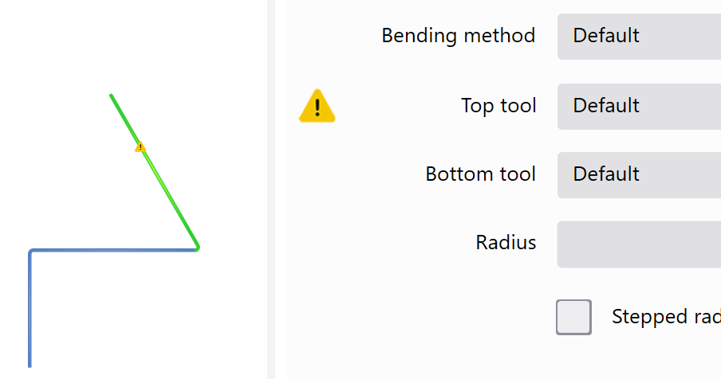

Im Profileditor können Profile erstellt werden, die aus mindestens zwei Schenkeln bestehen.
Durch Tippen auf den Hauptbildschirm, erscheint eine Winkelskala. Zusätzlich wird in der linken oberen Ecke ein übergeordnetes Fenster mit der Angabe des Innenwinkels und der Länge des aktiven Schenkels angezeigt.
Auf der rechten Seite stehen folgende Ansichtsleisten zur Verfügung:
| Symbol | Bedeutung |
|---|---|

|
Zoomfunktionen |

|
Lage |

|
Bearbeiten |
Kopfzeile
In der Kopfzeile werden die wichtigsten Funktionen und Menüs angezeigt. Die Kopfzeile wird in allen Ansichten angezeigt.
Nachfolgende Schaltflächen mit Unterfunktionen sind aufklappbar.
 Programme & Funktionen
Programme & Funktionen
In diesem Menü können Programme gestartet und zusätzliche Einstellungen ausgeführt werden.
| Symbol | Bedeutung |
|---|---|

|
Startet oder wechselt zum Programm BySoft Cell Control Bend |

|
Startet das Programm Administrator |

|
Startet den Dialog Einstellungen (See «Einstellungen») |
 Hilfsfunktionen
Hilfsfunktionen
In diesem Menü befinden sich alle Funktionen für Informationen zum Programm.
| Symbol | Bedeutung |
|---|---|

|
Starte den Dialog für Video-Tutorials |

|
Startet die Online-Hilfe als eigenständige Anwendung |

|
Öffnet den Dialog für eine detaillierte Versionsanzeige |
Profile können geometrisch oder über eine tabellarische Eingabe erstellt werden.
Tip: Durch Wählen der Schaltfläche Eigenschaften können im Register Biegungen nachträglich der Winkel und die Länge der Schenkel verändert werden.
Geometrisch
Die Eingabe erfolgt durch Tippen auf die Winkelskala.
-
Schaltfläche wählen. Die Winkelskala wird eingeblendet.
- Durch Ziehen wird die Länge und der Winkel des ersten Schenkel definiert. Die Winkelskala verschiebt sich immer an den Endpunkt des Schenkels.
- Durch ein erneutes Ziehen in einem bestimmten Winkel wird ein zweiter Schenkel an das Ende des ersten angehängt.
- Das fertige Profil mit der Funktion Speichern unter einem neuen Namen speichern.
- Mit der Funktion Exportieren wird das Teil automatisch im Programm BySoft Cell Control Bend zum Bearbeiten geladen.
Tabelle
Die Eingabe erfolgt durch wechselseitige Angabe von Schenkellänge Die Schenkellänge ist das Mass gemessen von der Biegelinie im rechten Winkel zur Aussenkontur des Biegeteils. und Winkel über die Funktion Tabelle.
- In der Funktionsleiste die Schaltfläche Tabelle wählen.
-
 Schaltfläche wählen.
Schaltfläche wählen. - Im Eingabedialog die Länge des ersten Schenkels eingeben und mit OK bestätigen.
- Im Eingabedialog den Winkel für den zweiten Schenkel eingeben und mit OK bestätigen.
- Im Eingabedialog die Länge für den zweiten Schenkel eingeben und mit OK bestätigen.
- Die Schritte 4 bis 5 wiederholen, bis alle Schenkel erstellt sind.
- Das fertige Profil mit der Funktion Speichern unter einem neuen Namen speichern.
- Mit der Funktion Exportieren wird das Teil automatisch im Programm BySoft Cell Control Bend zum Bearbeiten geladen.
Wenn an einem bestehenden Teil nur die Biegelänge verändert wird, kann die bestehende Technologie übernommen werden.
NOTE: Bei einer Veränderung der Biegelänge müssen im Programm ByVision Cutting im Menü Technologie der Einrichtplan Der Einrichtplan besteht aus mindestens einem Stationsplan. Jeder Stationsplan besteht wiederum aus mindestens einer Biegestation auf dem das Biegeteil gebogen wird. Auf einem Einrichtplan sind alle Werkzeuge für den gesamten Biegeprozess definiert. aktualisiert und die Anschlagsachsen nachpositioniert werden.
Voraussetzung:
- Die Anzahl Schnitte müssen übereinstimmen.
- Bei jedem Schnitt muss die Anzahl Flächen übereinstimmen.
- Die Anzahl Biegelinien müssen übereinstimmen.
- Bei jeder Biegelinie Als Biegelinie wird eine Linie bezeichnet an der entlang die Biegung der Schenkel erfolgt. muss die BendID, der Biegewinkel, die Verkürzung Als Verkürzung wird die Reduzierung des Schenkelmasses der Biegungen am Biegeteil bezeichnet. Durch das Biegen wird das Teil in der Länge gestreckt. Deshalb muss der Schenkel einer Biegung um dieses Mass beim Schneidteil wieder verkürzt werden. Durch das Verkürzen wird diese Streckung wieder kompensiert. und der Biegeinnenradius übereinstimmen.
- Schenkellängen dürfen verändert werden. Jedoch muss die Biegefolge Als Biegefolge wird die Abarbeitung aller Biegekanten eines Teils in einer bestimmten Reihenfolge bezeichnet. Ein Biegeteil kann meist durch mehrere Biegefolgen gebogen werden. Beim automatischen Setzen der Biegefolge ermittelt das Programm die optimalste Biegefolge und weist es dem Biegeteil zu. nachträglich überprüft werden.
Ist eine Hilfsbiegung Die Hilfsbiegung wird bei bestimmten Biegeformen vorläufig eingefügt und dann wieder zurückgebogen, um die Endform eines Biegeteils zu ermöglichen. eingefügt worden, kann die Technologie nicht mehr zusammengeführt werden. Das Einfügen einer Vorbiegung Dieser Biegetyp erstellt eine Biegung in zwei Schritten. Die Biegung wird zuerst mit einem Anbiegewinkel gebogen und zu einem späteren Zeitpunkt mit dem Endwinkel fertig gebogen. Verwenden Sie das Vorbiegen bei komplexen Biegeteilen, um Kollisionen während dem Biegeprozess zu vermeiden. hat keinen Einfluss und ist daher erlaubt.
Es darf kein Schenkel gelöscht oder hinzugefügt werden.
Die beeinflussenden Parameter eines Biegeprozesses dürfen nicht verändert werden.

Wenn auf Zeichnungen nicht konsequent Aussenmasse angegeben sind, kann die Schenkellänge um das Inkrement Blechdicke erhöht werden.
Dazu den Text Länge wählen. Es erscheint ein Popup (A), mit dem die Schenkellänge um die Blechdicke nach oben oder unten korrigiert werden kann.

Während der Eingabe eines neuen Profils wird die Anwendung der gewählten Werkzeuge überprüft. Folgende Eigenschaften werden überwacht:
- Flachdrückerlaubnis
- Biegemethode Als Biegemethode werden das 3-Punkt Biegen, Luftbiegen und Prägen bezeichnet. (z.B. Prägen Das Halbprägen und Vollprägen ist die genaueste Biegemethode. Die Form und der Biegewinkel wird durch die Geometrie des Ober- und Unterwerkzeuges bestimmt. Da dafür sehr hohe Presskräfte benötigt werden, erhöht es den Verschleiss der Biegemaschine.)
- kreuzende Schenkel
- minimale Schenkellänge
Wenn eine Flachbiegung Dieser Biegetyp biegt das Blech mit einem Biegewinkel von 180° flach zusammen. Der Biegevorgang wird nacheinander in den zwei Schritten «Vorbiegen» und «Flachbiegen» vollzogen. Diese Schritte können auch getrennt voneinander ausgeführt werden. programmieren ist und das Ober- und/oder Unterwerkzeug keine Erlaubnis zum Flachbiegen besitzt, wird eine Warnung angezeigt. Das Register Biegen im Dialog Eigenschaften wird automatisch eingeblendet.
Die Warnung wird immer beim Werkzeug angezeigt, obwohl eventuell auch die Biegemethode geändert werden muss. Die Warnung erlischt erst nachdem der Konflikt bereinigt ist.